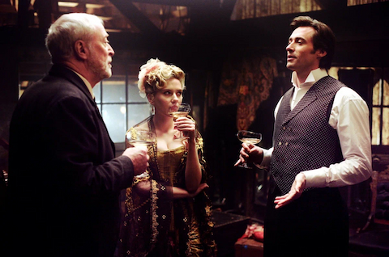

Каталог фильмов. Всего записей: 4. Лучший по оценке — «Крёстный отец», самый новый — «Начало». Средняя оценка IMDb — 8.8.
| Название | Режиссёр | Год | Жанр | Оценка IMDb |
|---|---|---|---|---|
| Семь | Дэвид Финчер | 1995 | триллер, детектив | 8.6 |
| Начало | Кристофер Нолан | 2010 | фантастика, триллер | 8.8 |
| Крёстный отец | Фрэнсис Форд Коппола | 1972 | драма, криминал | 9.2 |
| Престиж | Кристофер Нолан | 2006 | триллер, драма | 8.5 |
